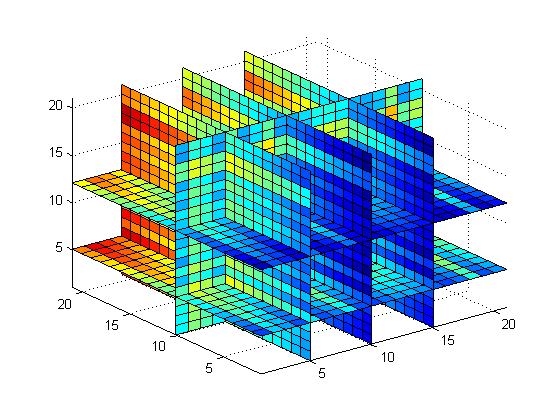

MATLAB supports arrays with more than two dimensions. Multidimensional arrays can be numeric, character, cell, or structure arrays.
Multidimensional arrays can be used to represent multivariate data. MATLAB provides a number of functions that directly support multidimensional arrays.
Multidimensional arrays in MATLAB are created the same way as two-dimensional arrays. For example, first define the 3 by 3 matrix, and then add a third dimension.
A = [5 7 8;
0 1 9;
4 3 6];
A(:,:,2) = [1 0 4;
3 5 6;
9 8 7]
A(:,:,1) =
5 7 8
0 1 9
4 3 6
A(:,:,2) =
1 0 4
3 5 6
9 8 7
The CAT function is a useful tool for building multidimensional arrays. B = cat(DIM,A1,A2,...) builds a multidimensional array by concatenating A1, A2 ... along the dimension DIM.
B = cat( 3, [2 8; 0 5], [1 3; 7 9], [2 3; 4 6])
B(:,:,1) =
2 8
0 5
B(:,:,2) =
1 3
7 9
B(:,:,3) =
2 3
4 6
Calls to CAT can be nested.
A = cat(3,[9 2; 6 5], [7 1; 8 4]); B = cat(3,[3 5; 0 1], [5 6; 2 1]); C = cat(4,A,B,cat(3,[1 2; 3 4], [4 3; 2 1]));
SIZE and NDIMS return the size and number of dimensions of matrices.
SzA = size(A) DimsA = ndims(A) SzC = size(C) DimsC = ndims(C)
SzA =
2 2 2
DimsA =
3
SzC =
2 2 2 3
DimsC =
4
To access a single element of a multidimensional array, use integer subscripts. For example D(1,2,2,22), using D defined in the previous slide, returns 6.
Array subscripts can also be vectors. For example:
K = C(:,:,1,[1 3])
K(:,:,1,1) =
9 2
6 5
K(:,:,1,2) =
1 2
3 4
RESHAPE, PERMUTE, and SQUEEZE are used to manipulate n-dimensional arrays. RESHAPE behaves as it does for 2D arrays. The operation of PERMUTE is illustrated below.
Let A be a 3 by 3 by 2 array. PERMUTE(A,[2 1 3]) returns an array with the row and column subscripts reversed (dimension 1 is the row, dimension 2 is the column, dimension 3 is the depth and so on). Similarly, PERMUTE(A,[3,2,1]) returns an array with the first and third subscripts interchanged.
A = rand(3,3,2); B = permute(A, [2 1 3]); C = permute(A, [3 2 1]);
Functions like EIG that operate on planes or 2D matrices do not accept multi-dimensional arrays as arguments. To apply such functions to different planes of the multidimensional arrays, use indexing or FOR loops. For example:
A = cat( 3, [1 2 3; 9 8 7; 4 6 5], [0 3 2; 8 8 4; 5 3 5], ... [6 4 7; 6 8 5; 5 4 3]); % The EIG function is applied to each of the horizontal 'slices' of A. for i = 1:3 eig(squeeze(A(i,:,:))) end
ans =
10.3589
-1.0000
1.6411
ans =
21.2293
0.3854 + 1.5778i
0.3854 - 1.5778i
ans =
13.3706
-1.6853 + 0.4757i
-1.6853 - 0.4757i
INTERP3, INTERPN, and NDGRID are examples of interpolation and data gridding functions that operate specifically on multidimensional data. Here is an example of NDGRID applied to an N-dimensional matrix.
x1 = -2*pi:pi/10:0;
x2 = 2*pi:pi/10:4*pi;
x3 = 0:pi/10:2*pi;
[x1,x2,x3] = ndgrid(x1,x2,x3);
z = x1 + exp(cos(2*x2.^2)) + sin(x3.^3);
slice(z,[5 10 15], 10, [5 12]); axis tight;
 You can build multidimensional cell arrays and mutidimensional structure arrays, and can also convert between multidimensional numeric and cell arrays.
To find out more, consult the MATLAB manual or HELPDESK on multidimensional arrays.